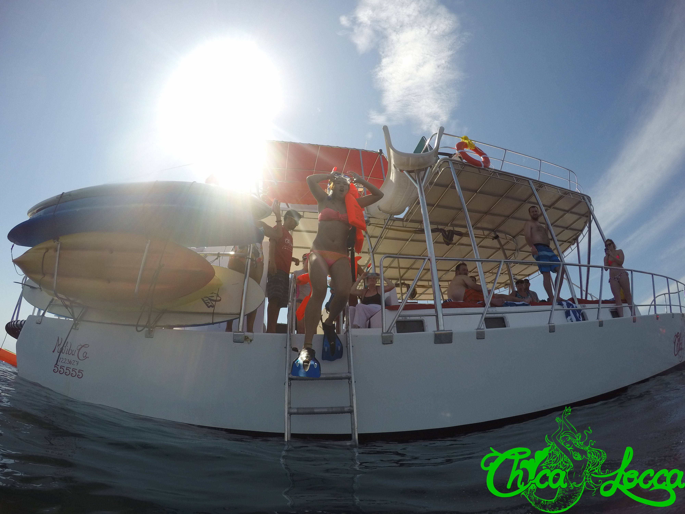
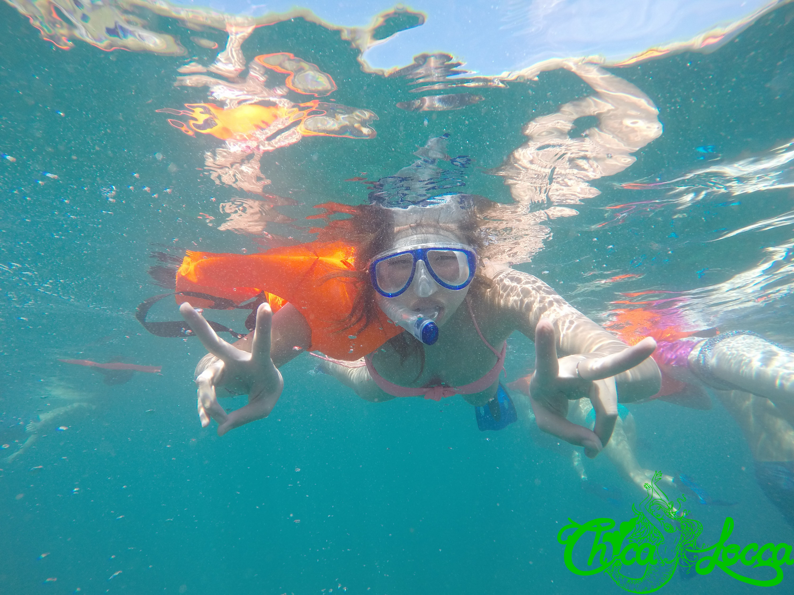
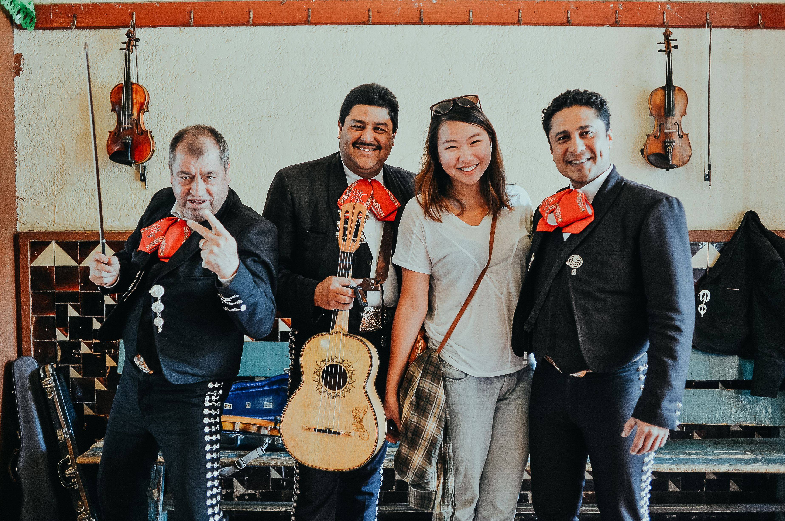

Mexico
Sayulita and Guadalajara

Once a hospital complex, Hospicio Cabañas in Guadalajara, Jalisco, Mexico, is now an UNESCO World Heritage Site.
Jumping off the boat for snorkling.
Snorkling off the coast of Islas Marietas in Nayarit state, and wishing I was a fish.
Found a mariachi band!
Tequila tasting during Jose Cuervo Distillary tour in Tequila, Jalisco, Mexico like a true tequila enthusiast.